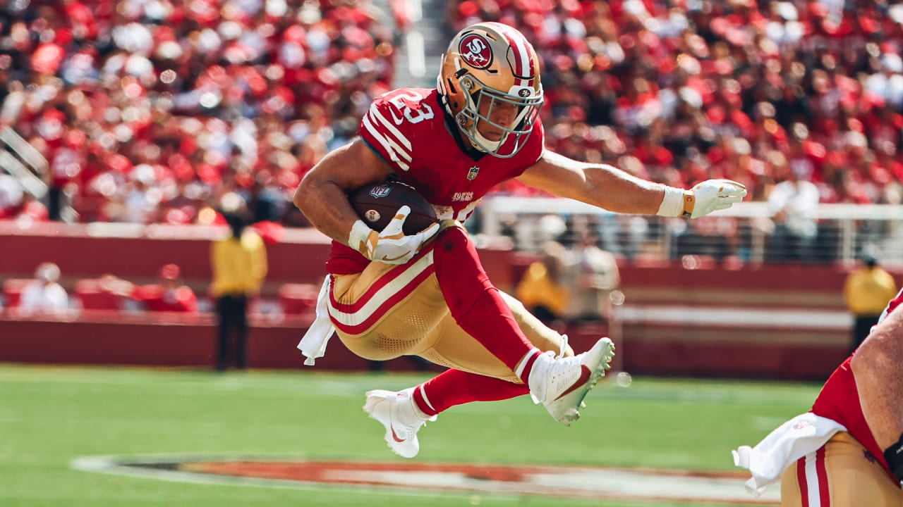
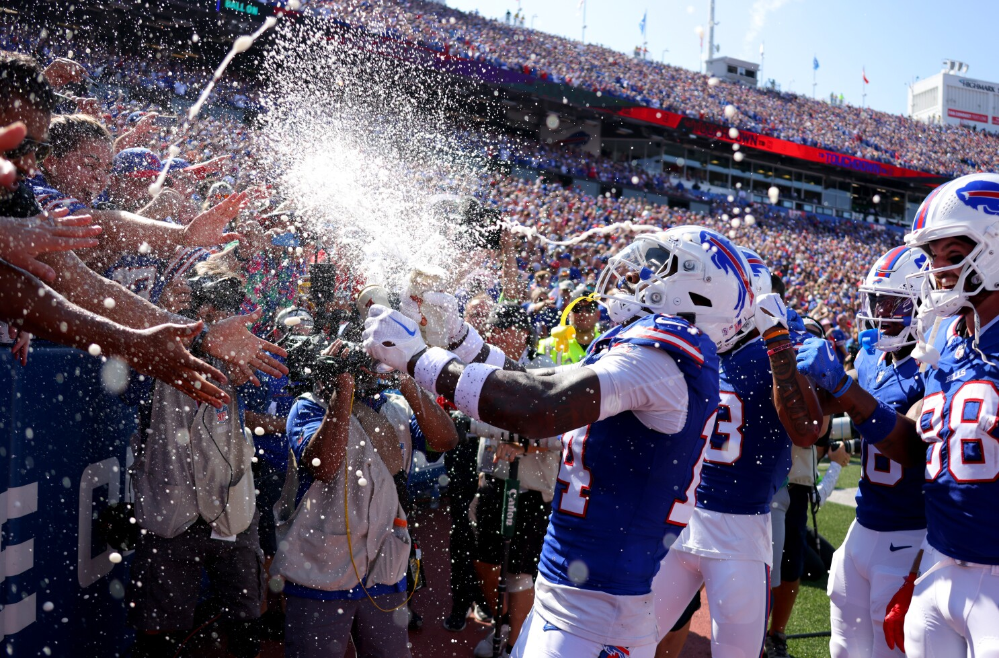
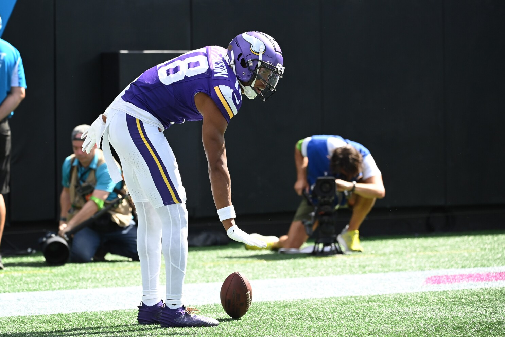
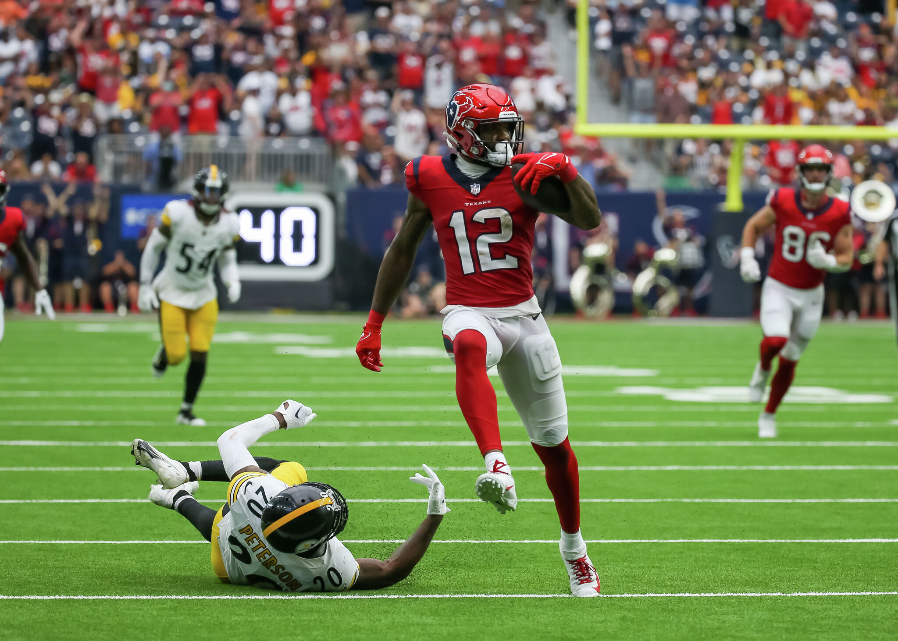
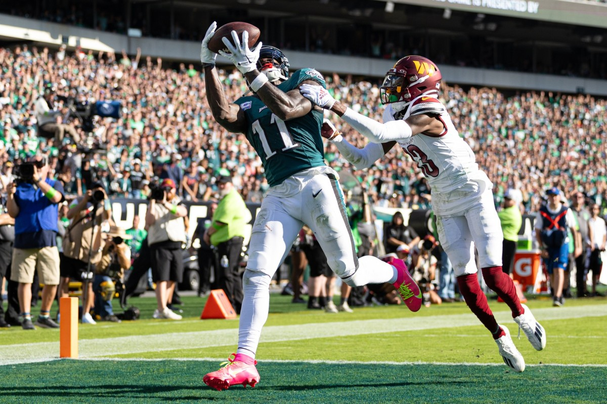
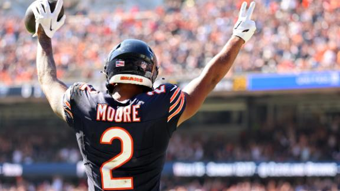
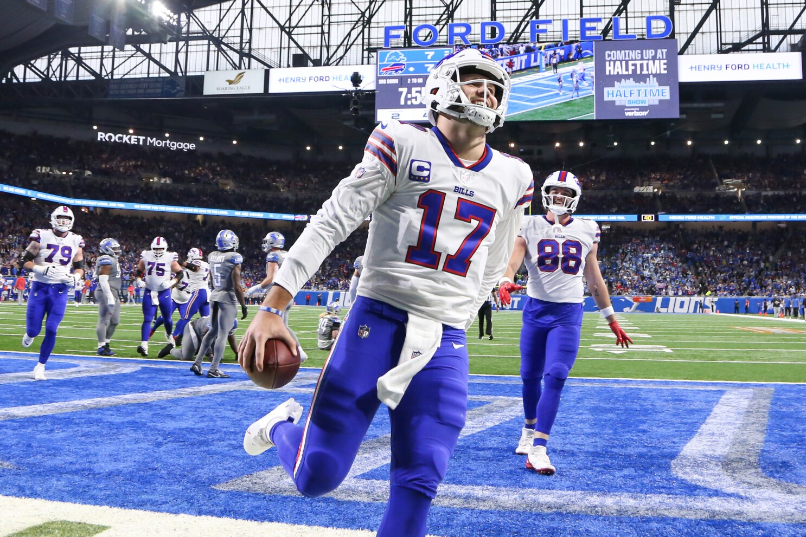
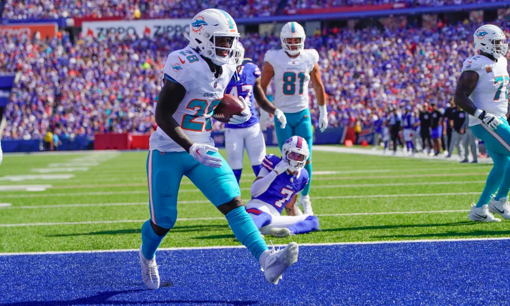
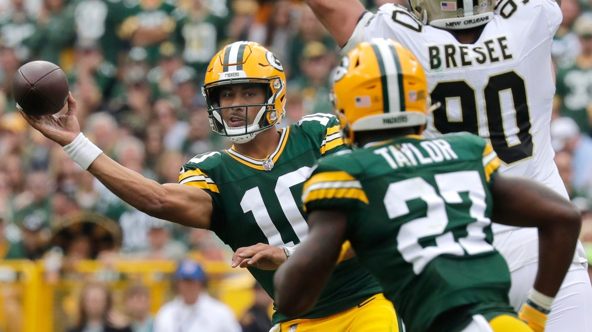
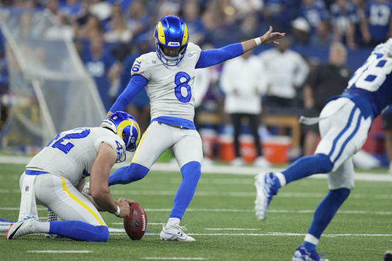

Matchup of the Week
*️⃣ Love Heem (2-2) Sweet Brotha Numpsay (3-1) *️⃣
This would be a huge spot for Kris to get a win and keep the league close. But Pangy’s had a way about him this year, finding his spots
Waiver Wire Wizard
🧙🏻♂️ Andy is nearly out of money, but found a way to win the four man race for Romeo Doubs ($17), who looks to have established a great rapport with Love.
Josh Dobbs ($1) is sneaky good for YP, too.
Cries for Help
😭 Love Heem again, again. $23 for Herbert is just too much. Since I have the hindsight of the Bears already playing this week, and Herbert now likely being out a few weeks, this was a little easier.
Week Three Power Rankings

👑 Diggin That Bijan Mustard (2-2) ⬆️⬆️
Waiver Budget: $65
CJ’s put up the most points, but has ran into the most too. His output has been very consistent, and he’s just now getting JT back. Yikes.

2. 8===D (3-1) 🔂
Waiver Budget: $71
Another win keeps PJ near the top, while sitting in first place in the league. Breece Hall season has apparently arrived, too, strengthening the RB2 spot, which has been up and down.

3. Hurts Donut (2-2) 🔂
Waiver Budget: $61
Holy moly Joel went offfff. How will Nacua’s output be affected by Kupp’s return? I think he still eatin.

4. Sweet Brotha Numpsay (3-1) ⬆️⬆️
Waiver Budget: $34
Pangy has his best week, even with the stinkfest that is Joe Burrow. Swift has been a great surprise, but Kyren Williams is the story for the Brothas - yet is somehow the second or third story on the Rams,

5. Tua Williams One Kupp (2-1) 🔂
Waiver Budget: $29
Wow Moore got Seif off to a hot start this week. Kupp’s arrival is welcomed, with the current state of the Bengals/Chase.

6. JA MONTG (1-3) ⬆️
Waiver Budget: $76
Holy shit, did you know Tony has the second most points? That trend has gotta turn into some wins.

7. Jus-Kareemn-4-Herb (2-2) ⬆️
Waiver Budget: $16
Andy is starting the wildest lineup I’ve ever seen this week, go check it out. Achane trade looks a lot better after another week, too.

8. Love Heem (1-2) ⬇️⬇️⬇️⬇️⬇️⬇️⬇️
Waiver Budget: $37
One week at the top for Kris, responds with a total doink. What’s Mostert’s value after Achane has taken over the carries? Perhaps he’ll run more routes.

9. Exotic Engrams (2-2) ⬇️⬇️⬇️⬇️⬇️⬇️⬇️⬇️
Waiver Budget: $53
I haven’t had a decent week since my week one explosion. Probably not happening for me this week either - but getting Ekeler back next week is gonna be huge.
💩 Unpaid Bills (1-3) 🔂
Waiver Budget: $60
Neil’s been pretty bad, and he needs his guys to get healthy. Something’s gotta change quickly if he wants to avoid the Slutler matchup.
Good luck to everyone besides Seif! 🐻
“We walk in the trap, we take over the trap.”
- Justin Tucker